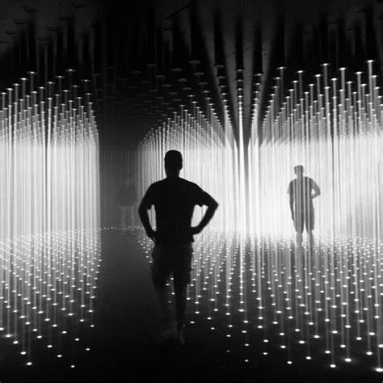

Random International
From 27 September, you can view the work of the post-digital art group Random International at Nxt Museum.
The exhibition showcases newly completed works and others that have never before been shown in Europe and follows the creative process of the artists, from 2006 to the present day.
Curated by Bogomir Doringer, the exhibition highlights the craftsmanship within and contextual backgrounds of an overview of their work.
"For what will be our third exhibition, we have decided to dive deep into the oeuvre and mindset of one art group.
The works of art
Random International's artworks are creative, collective dances between the public and technology,
They create stories in our minds about what it means to be human and live together." Bogomir Doringer, Curator
Prepare to be mesmerized by six large-scale works, including their mesmerizing Living Room installation in collaboration with Aorist, following its success during Miami Art Week in December 2022.
About the artists
Founded in 2005, Random International is a post-digital art group that explores the impact of technological development on the human condition.
Best known for their large-scale interactive installations, the group works in a range of media, including sculpture, light, kinetics, video, print, and sound.
Led by the founders Hannes Koch (b. 1975, Germany) and Florian Ortkrass (b. 1975, Germany),
the group has a studio in London and consists of a global team of complementary talent.